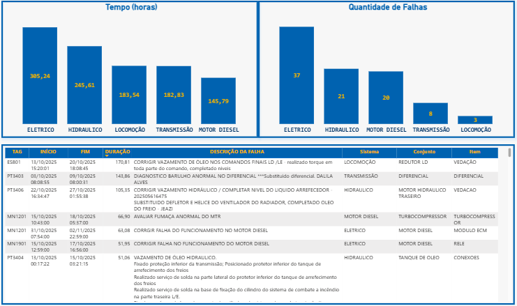
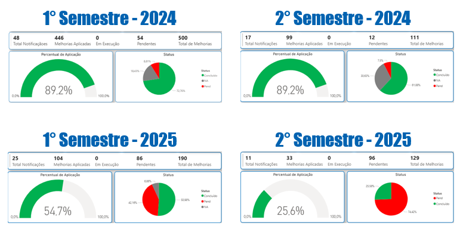
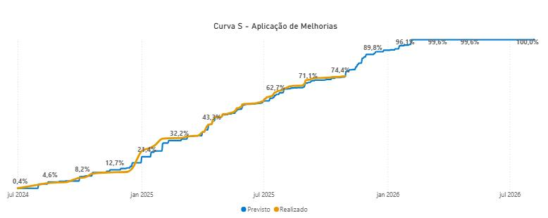
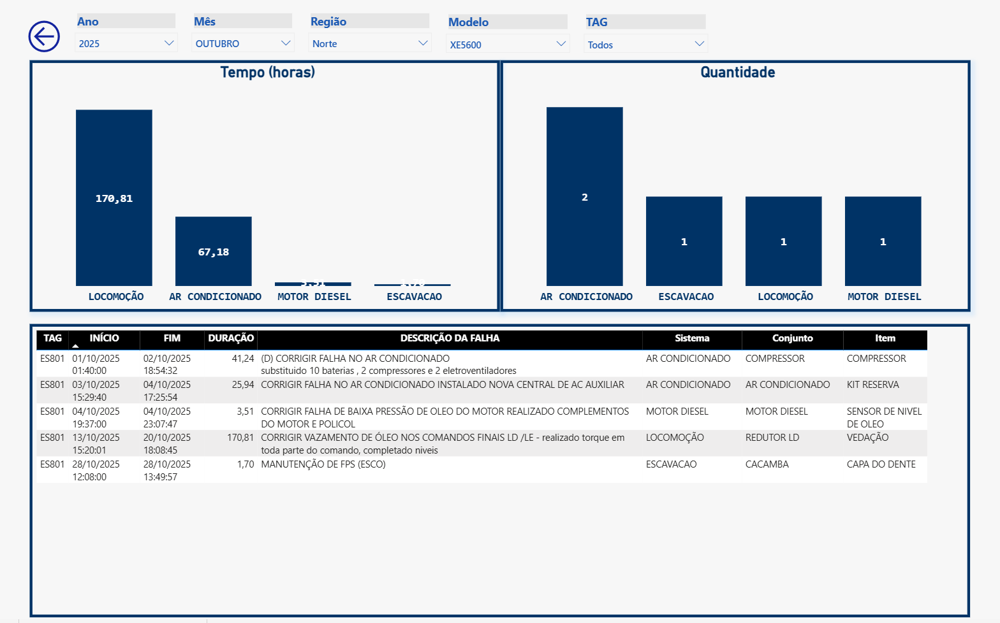
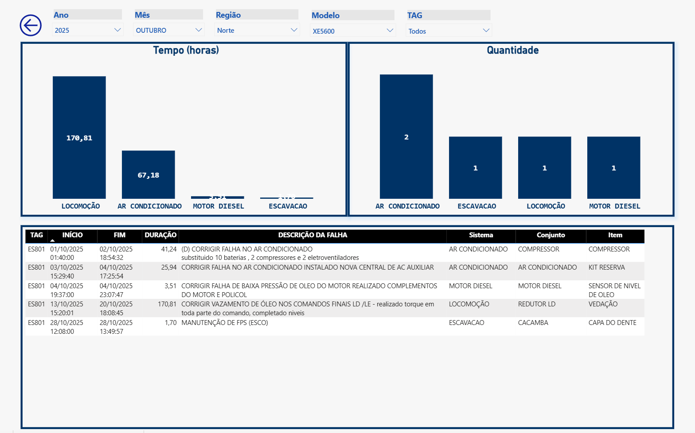

损失概况
十月结果：Vale设备损失概况显示战略重点方向
监控揭示关键系统并指导车队优化行动。
对Vale客户设备在十月份的持续损失概况监测，提供了影响运行可用性的主要事件的详细视图。这些数据的战略分析对改进维护和车队管理至关重要。

前五名 - 故障时间（小时）
十月份的总故障时间分布显示了对运行损失贡献最大的系统，明确了优先开展纠正与预防行动的方向：
- 电气系统： 365.24 小时
- 液压系统： 245.61 小时
- 驱动系统： 183.54 小时
- 传动系统： 182.83 小时
- 柴油发动机： 145.79 小时
前五名 - 故障数量（NIC）
就故障发生频率（组件事件数 - NIC）而言，十月份的数据进一步强化了通过故障时间已识别的关注重点：
- 电气系统： 37 次故障
- 液压系统： 21 次故障
- 柴油发动机： 20 次故障
- 传动系统： 8 次故障
- 驱动系统： 3 次故障
结合这两个指标的分析表明，电气系统在十月是导致损失的主要因素，在停机时间和故障数量上均占有显著比例。这表明需要重点关注与该组件相关的处理措施。
为深入理解，每项具体故障的详细数据可在补充表格中查看，并按持续时间排序。这一细节层次对于识别根本原因和制定更有效的解决方案至关重要。
持续监控与严格分析损失概况是优化设备性能、减少停机时间、保障Vale车队运行效率的重要工具，有助于优先处理关键问题并进行战略性资源分配。
改进控制进展
改进措施应用的进展情况
按期分解的方式提升透明度，加快优先级排序并强化计划治理。
随着技术通知量的增加，团队采用按发布时间段分解的新跟踪标准。此变更可按时间段评估进展，明确差距、潜在延误及优先处理机会。

除了强化流程治理外，新模式还改善了与相关部门的沟通，使各阶段的进展与关注点更清晰。接下来，团队将继续监控S曲线的符合度，重点处理积压较多的阶段，并保持实际进度超越计划部分的良好节奏。
改进控制 - S曲线
技术通知：Vale车队进展稳健，与计划保持一致
十月份标志着Vale客户设备技术通知跟踪与应用的显著进展。期间，共为 XE5600、GR3505 和 GR5505 机型发布了4项新通知，进一步彰显了我们对性能和资产安全持续改进的承诺。
团队的努力使10台设备完成了改进措施的实施，体现了执行纠正和预防行动的高效与快速。此举对确保Vale资产的寿命与运行效率至关重要。
S曲线：绩效与计划保持一致

本月的一大亮点是技术通知应用的S曲线表现。该可视化工具监控项目从2024年7月至2026年7月的进展，结果显示执行进度与计划高度一致。
“计划线”从2024年7月的0.4%开始，目标为2026年7月达成100%，目前“实际线”紧密跟随。计划与执行的几乎完美重合，充分体现了我们在规划与执行方面的卓越水平，确保长期目标得以稳步实现。
这一细致的监控机制使我们能够主动识别并应对偏差，确保技术通知在正确的时间内以预期的质量完成。该项目的成功进一步强化了与Vale的合作关系，凸显了我们在车队维护中提供稳健高效解决方案的专注与能力。
FMS系统数据管理
FMS系统展示首批成果
自上月实施FMS系统（Fleet Management System）以来，首批结果已充分展示了该举措的价值。系统共记录了55台Vale客户设备的547次停机事件，形成了坚实的数据基础，为仪表盘开发和故障分析提供了关键支撑。借助结构化数据，团队现可基于证据识别模式并做出决策。
同时在 Power BI 中开发了时间轴视图页面，用于展示设备系统故障的重复发生情况。此可视化工具支持跟踪问题演变并识别长期趋势。

对2025年9月至10月期间的初步分析共识别出343次故障，分布于主要关键系统。数据分布如下：
- 结构系统： 79 次故障（23%）
- 柴油发动机： 69 次故障（20%）
- 电气系统： 52 次故障（15%）
- 液压系统： 34 次故障（10%）
- 传动系统： 16 次故障（5%）
- 驱动系统： 14 次故障（4%）
- 润滑系统： 11 次故障（3%）
这些成果标志着在预测性维护和生产过程优化道路上的重要一步。仪表盘将持续更新和完善，以提供更精准的洞察。


 
